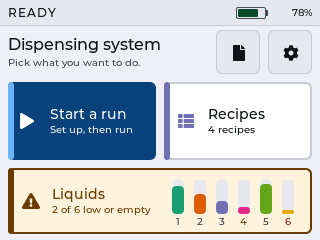

The operator interface, live
Every screen of the finished panel, captured from the device over USB at its native 320 by 240, in the panel's own RGB565 colour. Every button on the captures is tappable and goes where the firmware goes.
The screens were rendered on the device from staged example state: PANPOC Protocol 1, 16 samples on two racks, one recipe called Panpoc bind. Nothing here moves a motor.

A run, end to end
The six frames the thesis prints as the run flow. Tap one to land on it in the panel above, then keep tapping the panel.
What is real, what is staged, what this page fakes
Real
- Every pixel. The frames are the panel's own framebuffer, read back over USB after a forced refresh and expanded from RGB565 without smoothing. White is 255, the navy is the navy the panel shows.
- Every transition. The button destinations are the firmware's own navigation table, checked against the screen handlers. Back goes where the firmware's back goes, including the paths that depend on where you came from.
- The interlocks. Position unknown blocks a run and offers a reset. A short liquid disables START RUN and relabels it REFILL FIRST. Lines that were never filled raise the question before the pumps start.
- The three known clips. "getting low" is cut to "getting lov" on the liquid card, "unknown" loses its last letter on two screens, and the lane note runs into the nozzle dots on the clear-the-lane diagram. They are in the firmware, so they are here.
Staged on the device
- PANPOC Protocol 1, 16 samples on two racks, the recipe Panpoc bind: 5 uL IC-RNA, 300 uL ethanol 96 %, 50 uL beads.
- The battery reads 78 % because the sensing divider was designed but never fitted. The firmware says so.
- Log dates count from a fixed boot time. The machine has no clock, and each record says so.
- The build row on the service panel reads SIMULATOR: the capture build had the motion simulated.
Faked on this page
- Time. Resetting, filling, measuring and the run play through their captured phases in seconds, not the minutes the machine takes.
- Repaints without a capture. Where a tap would only redraw the same screen in a state that was never captured, the panel says so instead of inventing a frame.
- Languages and the dark theme were captured for the home screen, and the theme also for the run and settings screens. Elsewhere the panel stays English and light.
Provenance
Captured on 14 and 15 September 2026 from the ESP32-S3 board with the firmware's SHOT and DEMO console verbs, driven by ui_shot.py over the USB serial port. For each screen the script stages the example state, forces a full LVGL refresh, collects the flush stream into a 320 by 240 RGB565 buffer and checks it with a CRC32. All 30 screens are covered, 134 frames in total, including every paged screen, every dialog, both themes and five languages. Two frames are byte-identical to their base: the second fill attempt and the check with an unreadable level.
The 1× files are served from this folder unchanged. The thesis prints this page's address, so the path does not move. The earlier design rounds that led to this interface are published at Operator Interface Prototypes.